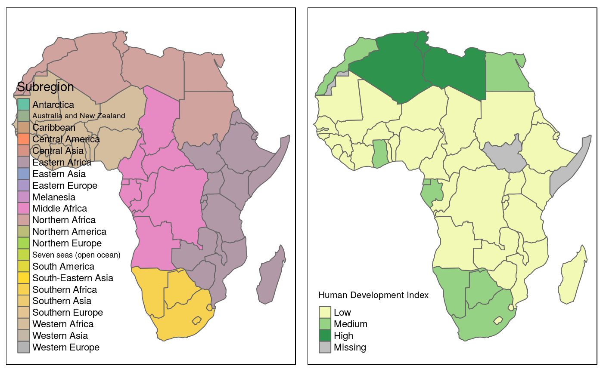
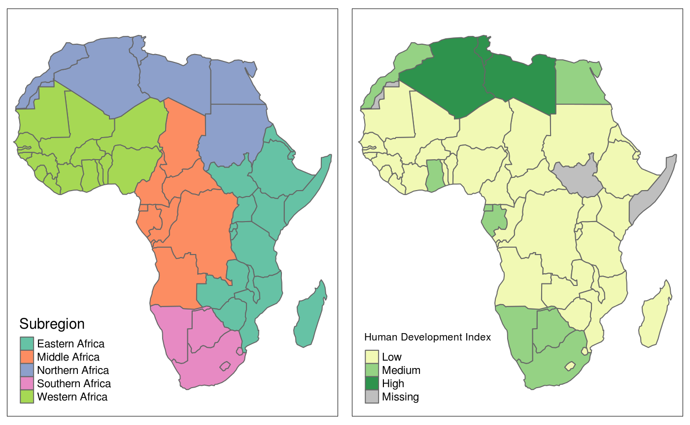
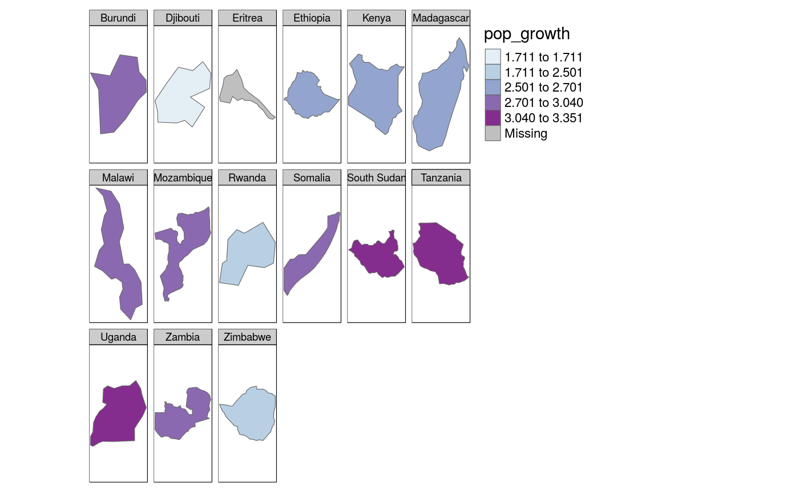
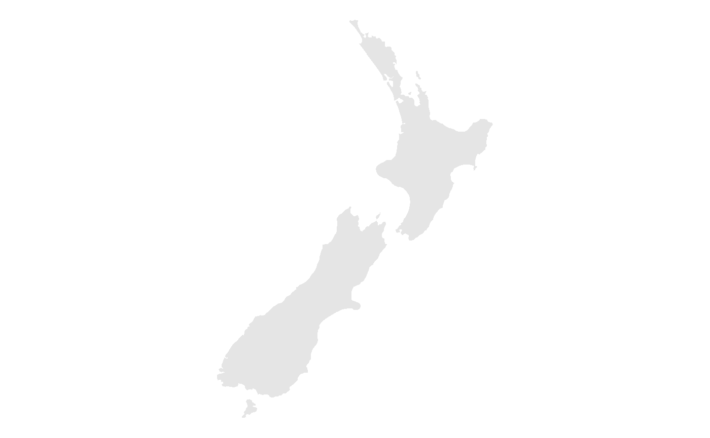
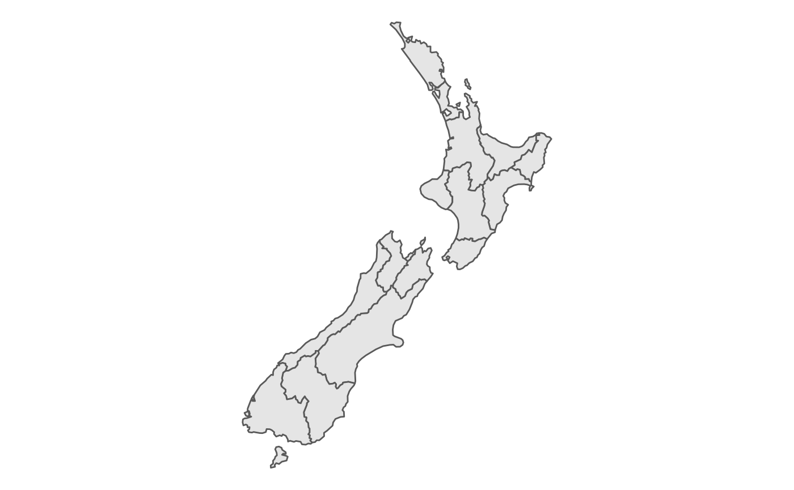

Chapter 8: Making maps with R
Robin Lovelace, Jakub Nowosad, Jannes Muenchow
2018-08-22
Source:vignettes/solutions08.Rmd
solutions08.RmdPrerequisites
The solutions assume the following packages are attached (other packages will be attached when needed):
library(sf)
library(tidyverse)
library(spData)
library(tmap)Chapter 8
For these exercises we will create a new object, africa, using the world and worldbank_df datasets from the spData package (see chapter @ref(attr) to learn more about attribute operations) as follows:
africa = world %>%
filter(continent == "Africa", !is.na(iso_a2)) %>%
left_join(worldbank_df, by = "iso_a2") %>%
dplyr::select(name, subregion, gdpPercap, HDI, pop_growth) %>%
st_transform("+proj=aea +lat_1=20 +lat_2=-23 +lat_0=0 +lon_0=25")
#> Warning: Column `iso_a2` joining factor and character vector, coercing into
#> character vectorWe will also use zion and nlcd datasets from spDataLarge:
zion = st_read((system.file("vector/zion.gpkg", package = "spDataLarge")))- Create a map showing the geographic distribution of the Human Development Index (
HDI) across Africa with -base graphics (hint: useplot()) and -tmap (hint: usetm_shape(africa) + ...).- Name two advantages of each approach
- What three other mapping packages could be used to show the same data?
- Name an advantage of each
- Bonus: create three more maps of Africa using the three packages mentioned previously
- Extend the map of Africa created with tmap for the previous exercise so the legend has three bins: “High” (
HDIabove 0.7), “Medium” (HDIbetween 0.55 and 0.7) and “Low” (HDIbelow 0.55).- Bonus: improve the map aesthetics, for example by changing the legend title, class labels and color palette.
# >0.8 - Very high human development
# >0.7 - High human development
# >0.55 - Medium human development
# <0.55 - Low human development
sm1 = tm_shape(africa) +
tm_polygons(
col = "HDI",
title = "Human Development Index",
breaks = c(0, 0.55, 0.7, 0.8),
labels = c("Low", "Medium", "High"),
palette = "YlGn"
)- Represent
africa’s subregions on the map. Change the default color palette and legend title. Next, combine this map and the map created in the previous exercise into a single plot.
sm2 = tm_shape(africa) +
tm_polygons(col = "subregion",
title = "Subregion",
palette = "Set2")
tmap_arrange(sm2, sm1)
#> Some legend labels were too wide. These labels have been resized to 0.54, 0.57. Increase legend.width (argument of tm_layout) to make the legend wider and therefore the labels larger. 1. Create a land cover map of the Zion National Park. - Change the default colors to match your perception of the land cover categories - Add a scale bar and north arrow and change the position of both to improve the map’s aesthetic appeal - Bonus: Add an inset map of the Zion National Park’s location in the context of the Utah state. (Hint: an object representing Utah can be subsetted from the us_states dataset.)
# FIX NEEDED
lc_colors = c("#476ba0", "#aa0000", "#b2ada3", "#68aa63", "#a58c30",
"#c9c977", "#dbd83d", "#bad8ea")
sm3 = tm_shape(nlcd) + tm_raster(palette = lc_colors, title = "Land cover") +
tm_shape(zion) + tm_borders(lwd = 3) +
tm_scale_bar(size = 1, position = "left") +
tm_compass(type = "8star", position = c("RIGHT", "top")) +
tm_layout(legend.frame = TRUE, legend.position = c(0.6, "top"))
sm3
utah = filter(us_states, NAME == "Utah")
zion_bbox = st_as_sfc(st_bbox(nlcd))
sm3_plus = sm3 +
tm_layout(frame.lwd = 4)
im = tm_shape(utah) +
tm_polygons(lwd = 3, border.col = "black") +
tm_shape(zion_bbox) +
tm_polygons(col = "green", lwd = 1) +
tm_layout(title = "UTAH", title.size = 2, title.position = c("center", "center")) +
tm_layout(frame = FALSE, bg.color = NA)
library(grid)
print(sm3_plus, vp = grid::viewport(0.5, 0.5, width = 0.95, height = 0.95))
print(im, vp = grid::viewport(0.2, 0.4, width = 0.35, height = 0.35))- Create facet maps of countries in Eastern Africa:
- with one facet showing HDI and the other representing population growth (hint: using variables
HDIandpop_growthrespectively) - with a ‘small multiple’ per country
- with one facet showing HDI and the other representing population growth (hint: using variables
eastern_africa = filter(africa, subregion == "Eastern Africa")
tm_shape(eastern_africa) +
tm_polygons(col = c("HDI", "pop_growth")) +
qtm(africa, fill = NULL)
# https://github.com/mtennekes/tmap/issues/190#issuecomment-384184801
tm_shape(eastern_africa) +
tm_polygons("pop_growth", style = "jenks", palette = "BuPu") +
tm_facets(by = "name", showNA = FALSE) 1. Building on the previous facet map examples, create animated maps of East Africa: - showing first the spatial distribution of HDI scores then population growth - showing each country in order
m = tm_shape(eastern_africa) +
tm_polygons(col = c("HDI", "pop_growth")) +
qtm(africa, fill = NULL) +
tm_facets(ncol = 1, nrow = 1)
tmap_animation(m, filename = "m.gif")
#> Animation saved to /home/robin/repos/geocompkg/vignettes/m.gif
browseURL("m.gif")
m = tm_shape(eastern_africa) +
tm_polygons("pop_growth", style = "jenks", palette = "BuPu") +
tm_facets(by = "name", showNA = FALSE, ncol = 1, nrow = 1)
tmap_animation(m, filename = "m.gif")
#> Animation saved to /home/robin/repos/geocompkg/vignettes/m.gif
browseURL("m.gif")- Create an interactive map of Africa:
- with tmap
- with mapview
- with leaflet
- bonus: for each approach add a legend (if not automatically provided) and a scale bar
- Sketch on paper ideas for a web mapping app that could be used to make transport or land-use policies more evidence based:
- In the city you live in, for a couple of users per day
- In the country you live in, for dozens of users per day
- Worldwide for hundreds of users per day and large data serving requirements
- How would app design, deployment and project management decisions change as the scale of map deployment increases?
- Update the code in
coffeeApp/app.Rso that instead of centering on Brazil the user can select which country to focus on:- Using
textInput() - Using
selectInput()
- Using
- Reproduce Figure @ref(fig:tmshape) and the 1st and 6th panel of Figure @ref(fig:break-styles) as closely as possible using the ggplot2 package.
# fig 9.1 (\@ref(fig:tmshape))
ggplot() +
geom_sf(data = nz, color = NA) +
coord_sf(crs = st_crs(nz), datum = NA) +
theme_void()
ggplot() +
geom_sf(data = nz, fill = NA) +
coord_sf(crs = st_crs(nz), datum = NA) +
theme_void()
ggplot() +
geom_sf(data = nz) +
coord_sf(crs = st_crs(nz), datum = NA) +
theme_void()
# fig 9.7 ( \@ref(fig:break-styles))
ggplot() +
geom_sf(data = nz, aes(fill = Median_income)) +
coord_sf(crs = st_crs(nz), datum = NA) +
scale_fill_distiller(palette = "Oranges", direction = 1) +
theme_void()ggplot() +
geom_sf(data = nz, aes(fill = Island)) +
coord_sf(crs = st_crs(nz), datum = NA) +
scale_fill_brewer(palette = "Set3") +
theme_void()# fig 9.13 (\@ref(fig:urban-facet))
# ggplot() + geom_sf(data = world) + geom_sf(data = urb_1970_2030, aes(size = population_millions)) + coord_sf(crs = st_crs(urb_1970_2030), datum = NA) + facet_wrap(~year, nrow = 2) + theme(panel.background = element_rect(fill = "white"))- Join
us_statesandus_states_dftogether and calculate a poverty rate for each state using the new dataset. Next, construct a continuous area cartogram based on total population. Finally, create and compare two maps of the poverty rate: (1) a standard choropleth map and (2) a map using the created cartogram boundaries. What is the information provided by the first and the second map? How do they differ from each other?
library(cartogram)
# prepare the data
us = st_transform(us_states, 2163)
us = us %>%
left_join(us_states_df, by = c("NAME" = "state"))
# calculate a poverty rate
us$poverty_rate = us$poverty_level_15 / us$total_pop_15
# create a regular map
ecm1 = tm_shape(us) + tm_polygons("poverty_rate", title = "Poverty rate")
# create a cartogram
us_carto = cartogram(us, "total_pop_15")
#>
#> Please use cartogram_cont() instead of cartogram().
#> Mean size error for iteration 1: 3.57625847166086
#> Mean size error for iteration 2: 2.55839132841766
#> Mean size error for iteration 3: 2.04152725177029
#> Mean size error for iteration 4: 1.7027677314499
#> Mean size error for iteration 5: 1.4710875912221
#> Mean size error for iteration 6: 1.3129279128198
#> Mean size error for iteration 7: 1.2051710322325
#> Mean size error for iteration 8: 1.13328222209069
#> Mean size error for iteration 9: 1.08649649976785
#> Mean size error for iteration 10: 1.05665256093497
#> Mean size error for iteration 11: 1.03795243098966
#> Mean size error for iteration 12: 1.02613333013381
#> Mean size error for iteration 13: 1.01851808536734
#> Mean size error for iteration 14: 1.01329525160191
#> Mean size error for iteration 15: 1.0096756895884
ecm2 = tm_shape(us_carto) + tm_polygons("poverty_rate", title = "Poverty rate")
# combine two maps
tmap_arrange(ecm1, ecm2) 1. Visualize population growth in Africa. Next, compare it with the maps of a hexagonal and regular grid created using the geogrid package.
1. Visualize population growth in Africa. Next, compare it with the maps of a hexagonal and regular grid created using the geogrid package.
# devtools::install_github("jbaileyh/geogrid")
library(geogrid)
hex_cells = calculate_grid(africa, grid_type = "hexagonal", seed = 25, learning_rate = 0.03)
africa_hex = st_as_sf(assign_polygons(africa, hex_cells))
reg_cells = calculate_grid(africa, grid_type = "regular", seed = 25, learning_rate = 0.03)
africa_reg = st_as_sf(assign_polygons(africa, reg_cells))
tgg1 = tm_shape(africa) + tm_polygons("pop_growth", title = "Population's growth (annual %)")
tgg2 = tm_shape(africa_hex) + tm_polygons("pop_growth", title = "Population's growth (annual %)")
tgg3 = tm_shape(africa_reg) + tm_polygons("pop_growth", title = "Population's growth (annual %)")
tmap_arrange(tgg1, tgg2, tgg3)